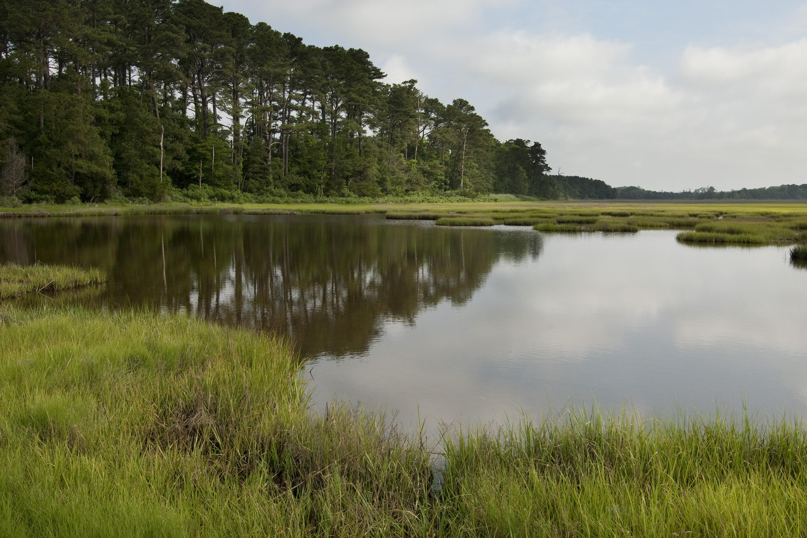

BpS Models
This page:
- Short introduction to the LANDFIRE program
- Description of the Biophysical Settings, plus reference conditions delivered in the BpS descriptions and models
- Discussion of application scale
LANDFIRE
LANDFIRE is a multi-partner program that “provides 20+ national geo-spatial layers (e.g. vegetation, fuel, disturbance, etc.), databases, and ecological models that are available to the public for the US and insular areas”.
LANDFIRE BpS
The LANDFIRE Program, in collaboration with experts around the country, created a set of over 900 STSMs for ecosystems in the United States. Each LANDFIRE STSM represents a Biophysical Setting – a vegetation concept that describes the vegetation community likely to have been dominant on the landscape prior to European American settlement given an approximation of historical disturbance regimes and the current biophysical environment.
LANDFIRE BpS models are reference condition models that define natural vegetation communities and their historical disturbance regimes.
LANDFIRE Biophysical Settings represent vegetation that may have been dominant on the landscape just prior to Euro-American settlement. They are based on NatureServe’s Ecological Systems. Biophysical Settings are mapped (for more information on the spatial data visit this site), described below, and modeled using SyncroSim.
The descriptions and models are the focus of our work here.
Reference conditions

Photo: © Ian Shive, TNC, Independence Lake, Nevada
Understanding how ecosystems looked and worked prior to Euro-American settlement is a focus of the biophysical settings body of work. The process was to:
Classify and define the ecosystems. LANDFIRE calls the historic ecosystems “Biophysical Settings”, and used NatureServe’s Ecological Systems
The LANDFIRE team held expert workshops to:
- Describe the BpSs, including their nested succession classes, up to 5 for each BpS including their canopy height, composition and percent cover.
- Use state and transition modeling techniques to get an estimate of how much of each succession class would have been on the landscape historically, (prior to Euro-American settlement). The estimated amount of each succession class depends on the natural disturbance regimes that the experts input into SyncroSim (just like you will be doing soon!).
From 2018 to 2019, TNC’s LANDFIRE team led a review of these models and descriptions, adding some new features to all of them (e.g., disturbance information), and updating content for over 300 of them.
Descriptions
Each BpS has an extensive description See the description from the Montane Sagebrush Steppe Ecosystem example. Included in each description:
- Biophysical Setting Name and Number
- Map Zones the description covers
- Descriptive Geographic Range text
- Biophysical Site Description
- Disturbance description
- Descriptions of each succession class
- Relevant literature
Models
Models include the information contained in the SyncroSim library. Downloading and running the BpS models using the SyncroSim software gives users immediate access to over 900 models that were created and analyzed by our team.

Photo: © Mark Godfrey, TNC, Virginia Coast ReserveApplication scale of the models
Importantly, these models and descriptions were designed for use over large areas - not your back yard. BpS models were developed for use at the National Land Cover Database level (hundreds of thousands of acres - see Get Models). That said, people do use them for smaller areas. Success of downscaling depends on factors such as:
- How much review, and how comfortable are users with the information included in the models?
- How important are the decisions and how much risk is involved?
- How much supporting information is there?
For more information
- Watch an introduction to SyncroSim Note: some features of SyncroSim may be different than what you see in the video due to versioning.
What’s next?
- locate, download, import a model
- make sense of the parts of model description